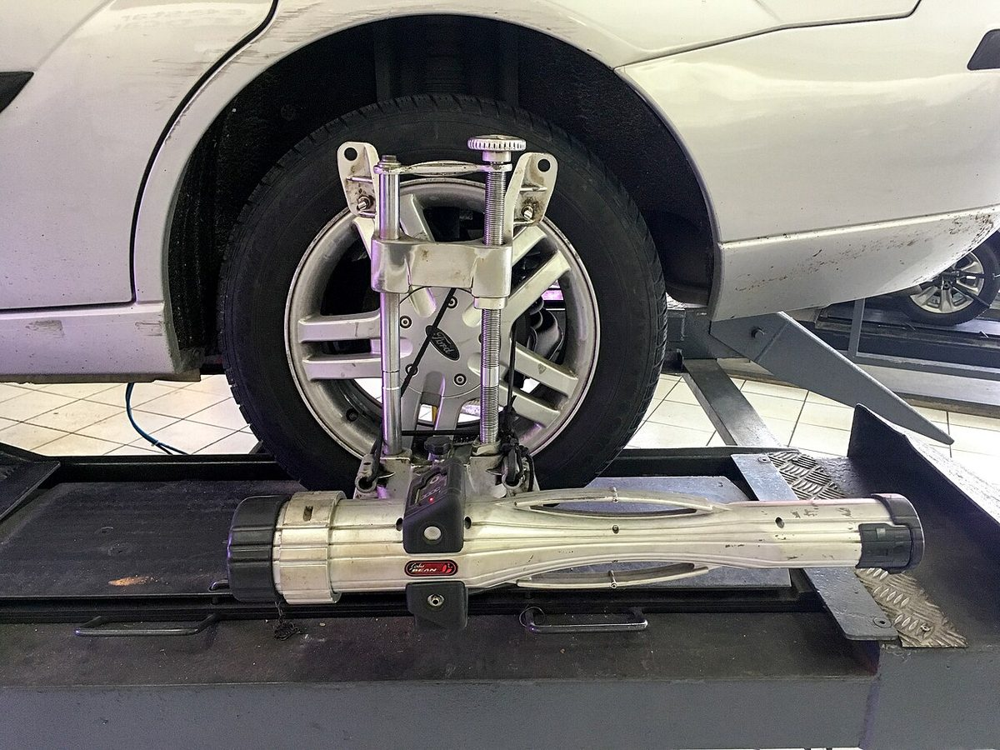

Poradňa autoservisu autoZ
Auto ťahá do strany
Keď auto na rovnej ceste samo uhýba doľava alebo doprava a volant musíte stále korigovať, niečo nie je v poriadku s pneumatikami, geometriou, bŕzdami alebo podvozkom. Kľúčové je, kedy presne auto ťahá.

Ďalej nejazdite. Môže ísť o zadretý brzdový strmeň alebo poruchu bŕzd – auto sa pri prudšom brzdení môže stočiť.
Zvyčajne môžete opatrne jazdiť. Skontrolujte tlak v pneumatikách a dajte skontrolovať podvozok a geometriu – ťahanie zvyšuje opotrebenie pneumatík.
Kedy auto ťahá a prečo
| Kedy ťahá | Pravdepodobná príčina | Čo s tým |
|---|---|---|
| Stále, aj na rovnej ceste | rozdielny tlak v pneumatikách, nerovnomerne zjazdené pneumatiky, nesprávne nastavená geometria | tlak, kontrola pneumatík, geometria |
| Po výmene alebo prezutí pneumatík | chybná pneumatika (ťahá sama od seba), rôzne pneumatiky na jednej náprave | na skúšku prehodiť kolesá na náprave |
| Len pri brzdení | zadretý strmeň alebo piest, nerovnomerne opotrebované platničky, olej na kotúči, poškodená brzdová hadica | kontrola bŕzd, pri výraznom ťahaní nejazdiť |
| Pri pridaní plynu (predný náhon) | opotrebované uloženie motora, silentbloky ramien, poloosi | kontrola podvozku |
| Po náraze do obrubníka alebo jamy | ohnutá tyč riadenia, rameno alebo disk kolesa | kontrola dielov a geometria |
| Postupne sa zhoršuje, klepe cez nerovnosti | vôle v čapoch, silentblokoch, koncovkách riadenia | výmena dielov, potom geometria |
| Auto pláva, treba stále korigovať | opotrebované tlmiče, vôľa v riadení, ložisko kolesa | kontrola podvozku a riadenia |
Mierne ťahanie k okraju vozovky môže spôsobiť aj sklon cesty – cesty sa robia so spádom kvôli odtoku vody. Vyskúšajte to na rovnom úseku.
Čo si môžete skontrolovať sami
- Tlak v pneumatikách na studených pneumatikách podľa štítku výrobcu (býva v rámiku dverí vodiča alebo na viečku palivovej nádrže). Rozdiel medzi ľavou a pravou stranou je častou príčinou.
- Opotrebenie pneumatík – či nie je vzorka zjazdená viac na vnútornej alebo vonkajšej hrane. To ukazuje na geometriu.
- Rovnaké pneumatiky na náprave – rovnaký rozmer, typ a podobné opotrebenie.
- Teplota kolies po jazde – priblížte ruku k disku bez dotyku. Ak je jedno koleso výrazne teplejšie ako ostatné, brzda môže zostávať pritlačená.
- Krivý volant pri jazde rovno – ukazuje na geometriu alebo ohnutý diel.
Čo urobiť, keď auto ťahá do strany
- Ak auto ťahá výrazne pri brzdení alebo cítite pálenie od kolesa, nejazdite.
- Skontrolujte a upravte tlak v pneumatikách.
- Na bezpečnom rovnom úseku si všimnite, či auto ťahá stále, len pri brzdení alebo pri pridaní plynu.
- Ak ťahá po prezutí, na skúšku prehoďte kolesá ľavej a pravej strany na tej istej náprave. Ak sa ťahanie otočí, príčinou je pneumatika.
- Dajte skontrolovať podvozok, riadenie a brzdy. Geometria má zmysel až vtedy, keď sú diely bez vôle – na opotrebovaných dieloch nastavenie nevydrží.
Prečo to neodkladať
Auto, ktoré ťahá do strany, sa horšie ovláda pri brzdení a vyhýbaní sa prekážke a pneumatiky sa na ňom nerovnomerne zjazdia. Zadretá brzda sa prehrieva a poškodzuje kotúč aj ložisko kolesa. Ďalšie príznaky porúch nájdete na hlavnej stránke autoporucha.sk.
Časté otázky
Prečo auto ťahá do strany?
Najčastejšie pre rozdielny tlak v pneumatikách alebo nesprávnu geometriu. Ďalšími príčinami sú opotrebované diely podvozku, ohnutý diel po náraze a pri ťahaní počas brzdenia zadretý brzdový strmeň.
Prečo auto ťahá do strany pri brzdení?
Jedna strana brzdí viac ako druhá. Býva to zadretý strmeň alebo piest, nerovnomerne opotrebované platničky, olej na kotúči alebo poškodená brzdová hadica. Pri výraznom ťahaní nejazdite.
Pomôže nastavenie geometrie?
Ak sú diely podvozku a riadenia v poriadku, áno. Ak majú vôle, treba ich najprv vymeniť – geometria nastavená na opotrebovaných dieloch nevydrží.
Môže auto ťahať do strany kvôli pneumatike?
Áno. Okrem nízkeho tlaku môže ťahať aj pneumatika s vnútornou chybou. Prehoďte na skúšku kolesá na náprave – ak sa smer ťahania zmení, príčinou je pneumatika.
Kde v Trenčíne skontrolujú podvozok a geometriu?
V autoservise autoZ na ulici gen. M. R. Štefánika 6670/19 v Trenčíne, pri Kauflande. Objednať sa môžete na 0910 606 999 alebo online na autoz.sk/rezervacia.
Súvisiace
← Všetky príznaky porúchSúvisiace na autoz.sk
Potrebujete poradiť?
Zavolajte alebo sa objednajte online. Auto pozrieme v autoservise autoZ v Trenčíne.
autoZ – autoservis Zelman · gen. M. R. Štefánika 6670/19, 911 01 Trenčín (pri Kauflande)
0910 606 999 · Po–Pi 8:00–16:30 · www.autoz.sk